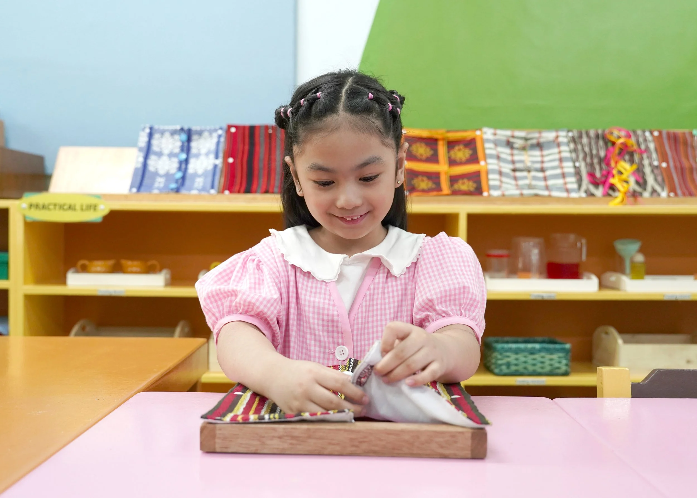
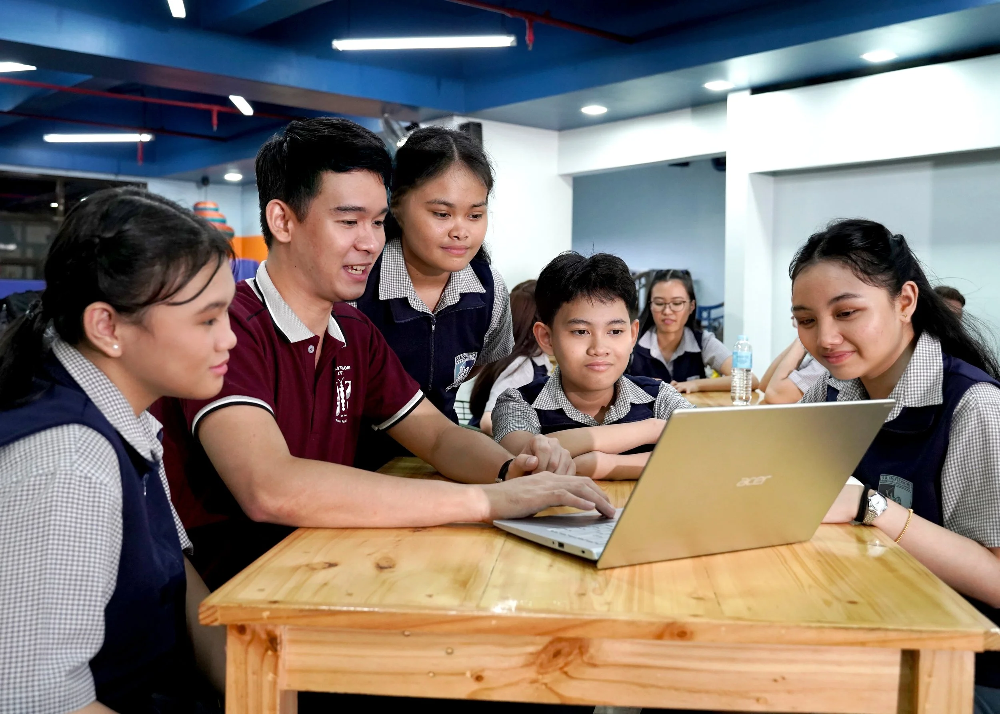

Casa Program
(Pre-Kindergarten to Kindergarten)

The Casa Program encourages the transformation of children from ages 3 to 5 as they consciously and willingly learn from their environment. The students form their personalities and develop their will and intelligence, using their senses to explore, discover, and manipulate the Montessori materials in the prepared environment.
Primary Program
Grades 1-3

In the Primary Grade School Program, the classroom’s prepared environment aids the intellectual and physical development of students from ages 6 to 8 until they achieve independence from adults and gain confidence as they relate to the world.
Intermediate Program
Grades 4-6

In the Intermediate Grade School Program, the students from ages 9 to 12 deepen their knowledge about their universal responsibility to care for life and the environment. The curriculum enhances academic proficiency while facilitating teamwork, problem-solving, and leadership skills.
Junior High School Program
Grades 7-10

Our Junior High School Program supports the emotional, psychological, and social transformation of students from ages 13 to 16 as they prepare for adult responsibilities. The curriculum focuses on strengthening critical skills like problem-solving, collaboration, and communication by harnessing their creative energies as they begin to seek economic independence.
Senior High School Program
Grades 11-12

The Senior High School Program further equips the students ages 17 and 18 with the skills and knowledge necessary for future success. The curriculum is GAS Plus, which allows the students flexibility in exploring career options and seamlessly moving up to the tertiary level of any local or international college or university.